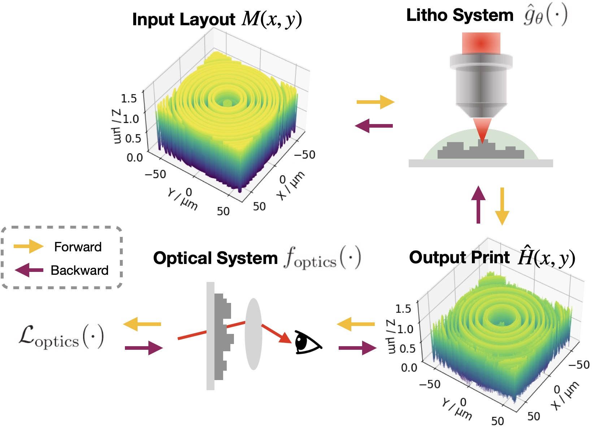
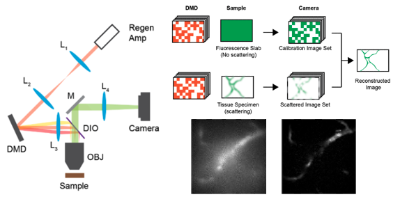
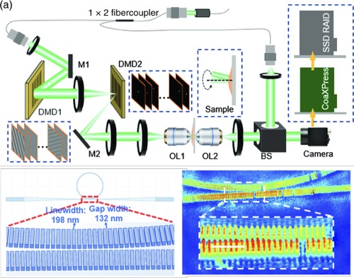

News
March 2024
I will give invited talks on Neural Lithography in High-beams
seminar, MIT Visual Computing Seminar and
International
Lithography Simulation Workshop. Please stay
tuned!
Nov 2023
Our work on Neural
Lithography is accepted by SIGGRAPH Asia 2023 and featured by MIT News.
Jan 2023
I received the DeFlorez Travel Award in
Design and
Manufacturing for SPIE Photonics West 2023.
Oct 2021
I attended the Rising Stars in Mechanical Engineering Workshop,
MIT,
2021.
July 2021
Our paper De-scattering with Excitation
Patterning is published in Science Advances and featured by MIT News.
Publications
(* indicates equal contributionship)

Neural Lithography
SIGGRAPH Asia 2023
A real2sim pipeline to quantitatively construct a high-fidelity neural photolithography
simulator and a design-fabrication co-optimization framework to bridge the design-to-manufacturing gap
in computational optics.

De-scattering with Excitation Patterning
Science Advances 2021
A computational imaging technique using random patterned illumination to remove the
scattered
photons to achieve seven scattering lengths deep in brain in wide-field two-photon temporal focusing
microscopy.
Before MIT:

Nonlinear Focal Modulation Microscopy
Physical Review letters 2018 (On the cover)
PSF engineering, in combination with non-linear light-matter
interaction, can achieve eqaulivent supre-resolving capacity as STED (the one won the 2014 Nobel prize)
while requiring much simpler setup and imposing less constraint on the object to image with.


DMD-based common-path quantitative phase imaging and synthetic aperture phase microscopy
Advanced Photonics 2020 [Paper]
Optics Letters 2017 [Paper]
DMD is a flexible device with fast light modulation to enable faster speed and better
performance in quantitative phase imaging. Besides biomedical imaging, phase imaging are also applied in
material metrology with high resolution and sensitivity.
Acknowledgement:Thanks to Vincent Sitzmann
for his website template.